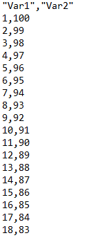
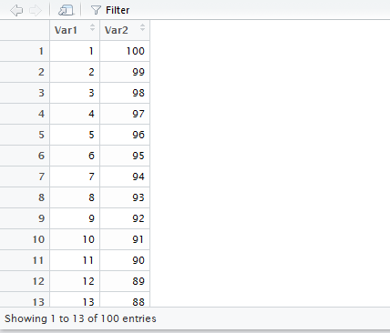
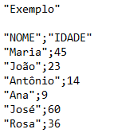
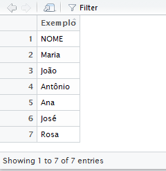
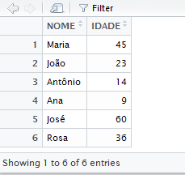
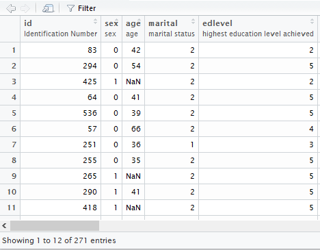

install.packages("readODS")
install.packages("readxl")
install.packages("haven")
install.packages("rio")2 Importação
No capítulo anterior, aprendemos a criar e a usar objetos e bases de dados R – mas isso nem de longe cobre as habilidades necessárias para realizar uma análise. Na verdade, ainda não aprendemos algo essencial: carregar nossas próprias bases de dados. Certamente existem outras coisas úteis para se aprender no R, mas, para os nossos objetivos, esta é quase obrigatória.
Neste capítulo, veremos como carregar os mais diversos tipos de dados no R, desde planilhas Excel até formatos mais modernos, como arquivos parquet com dezenas ou centenas de gibabytes. Com este conhecimento, dominaremos um pequeno conjunto de ferramentas para trazer ao R os mais diversos tipos de informação para análise: textos, bancos de dados criados em outros softwares, microdados censitários ou administrativos, arquivos com formatos específicos, entre outros.
Para ilustrar o conteúdo, carregaremos alguns arquivos que estão disponíveis na página de materiais complementares deste livro. O que veremos em seguida também pressupõe que você já saiba o que é um data.frame no R; caso tenha algumas dúvidas sobre isto, o Capítulo 1 é o melhor lugar para começar.
2.1 Importando dados no R
Só há um segredo para se aprender quando o assunto é carregamento de dados no R: cada tipo de arquivo geralmente requer uma solução específica de importação (mas, neste capítulo, veremos uma bastante geral). Além disso, também precisamos considerar dois maiores problemas. O primeiro deles é o limite de memória do computador, já que, no R, podemos carregar dados até o limite da memória RAM disponível.1 Já o segundo diz respeito a lidar com erros de acentuação e de reconhecimento de caracteres em cada base que formos trabalhar, o que pode resultar em bases carregadas de forma inadequada – ou, até mesmo, erro no carregamento. O R oferece soluções simples para contornar estes problemas, que veremos na parte final do capítulo.
Antes de seguirmos, precisaremos instalar alguns pacotes que nos ajudarão a carregar dados2. Alguns destes pacotes são:
readxl, para carregar planilhas do Excel;readODS, para carregar planilhas Open Document;haven, para importar dados do SPSS e Stata; erio, para importar diversos tipos de dados.
Para instalar estes pacotes, use install.packages("nome_do_pacote"):
2.2 tidyverse
Reservamos um espaço especial para um pacote que é o centro deste livro: o tidyverse. Este é, na verdade, uma espécie de meta-pacote que abriga um conjunto de outros pacotes menores, específicos para diferentes tarefas. Em particular, o desenho do tidyverse segue princípios gerais, isto é, suas ferramentas são feitas com uma preocupação de consistência e de integração.
Teremos a chance de ver várias das funções do tidyverse durante o nosso percurso, mas, no que diz respeito a carregamento de dados, ele oferece duas funções que nos ajudarão bastante: read_csv() e read_delim(), ambas pertencentes ao pacote readr. É por esta razão que também usaremos e instalaremos o tidyverse antes de prosseguir (executar a linha a seguir pode levar vários minutos dado que, por baixo dos panos, vários pacotes serão instalados):
install.packages("tidyverse")2.3 A mecânica da importação de arquivos
Temos várias formas de salvar informações em um computador. Podemos, por exemplo, escrever um texto no Word ou Libre Office e salvá-lo em um arquivo chamado Meu texto.doc, assim como podemos criar uma planilha no Excel e salvá-la no arquivo Minha planilha.xls. O importante aqui é que da mesma forma que cada um destes programas serve para trabalhar com um tipo específico de arquivo, no R também precisaremos de ferramentas específicas para abrir diferentes tipos de arquivo. Às vezes, faremos isto usando funções diferentes. Em outros casos, apenas precisaremos dizer para o R como ele deve proceder – qual encoding ele deve usar, onde ficarão os nomes das variáveis, qual é o tipo de delimitar de texto que deverá ser usado, entre outros.
A primeira coisa que precisamos saber, portanto, é qual solução usar para cada tipo de arquivo. Há formas simples de identificar isso, mas elas pressupõe saber a extensão do arquivo que queremos abrir (as letras depois do ponto ao final do nome do arquivo, e.g., .doc, .xlsx, etc.), que indicam qual é o seu formato. No Windows, podemos descobrir a extensão de um arquivo simplesmente clicando com o botão direito do mouse em cima dele e, depois, na opção “Propriedades” no menu que será aberto; feito isto, a extensão do arquivo será exibida logo acima (no campo de texto destacado em azul).
Para orientação geral, a Tabela 2.1 exibe um resumo dos principais tipos de arquivos de dados, geralmente usados em análises, que aprenderemos a abrir neste capítulo com suas respectivas extensões – e funções e pacotes que usaremos para carregá-los no R.
| Arquivo | Extensão | Pacote | Função |
|---|---|---|---|
| Texto delimitado | .txt |
readr |
read_delim |
| Texto delimitado | .csv |
readr |
read_delim, read_csv |
| Planilha do Excel | xls, xlsx, .ods |
readxl, openxlsx, readODS |
read_excel, read.xlsx, read.ods |
| Banco de dados do SPSS | .sav, .por |
haven |
read_sav, read_por |
| Banco de dados do Stata | .dta |
haven |
read_dta |
| Banco de dados do SAS | .sas7bdat |
haven |
read_sas |
| R Data | .Rda |
- | load |
| Apache Parquet | .parquet |
duckdb e DBI |
dbConnect e tbl |
Apesar de parecer muita coisa, a mecânica geral de carregar dados é mais ou menos a mesma para qualquer tipo de arquivo: se aprendermos a usar uma solução, provavelmente saberemos usar as demais. A ideia básica, detalhada em seguida, é:
objeto <- nome_da_funcao("nome_do_arquivo.extensao", outros_argumentos...)2.4 Importando arquivos
2.4.1 Arquivos de texto delimitado
Começaremos carregando um dos tipos de arquivos mais comuns no R: o .csv, de comma-separated values, ou valores separados por vírgulas. Além de simples, este formato é flexível (pode ser salvo também em arquivo com extensão .tab, .txt, etc.) e intuitivo: cada observação no banco (linha) é separada por quebra de parágrafo (nova linha) e cada variávei (coluna) é separada por um caractere fixo (como ponto e vígula ou vírgula)3. É possível abrir diretamente estes arquivos com algum editor de texto simples para ver como eles são organizados, como mostra a Figura 2.1.

Como é possível notar, temos duas variáveis neste arquivo: “Var1” e “Var2”. Cada linha é uma observação, e os valores de cada variáveis estão separados por uma vírgula. De forma geral, esta é a forma como dados são salvos neste tipo de arquivo – precisamos apenas saber qual é o separador das colunas (no caso, vírgula).
Para carregar este arquivo, podemos usar a função read_delim do pacote readr – parte do pacote tidyverse. Como seu nome sugere, a função serve para ler arquivos delimitados. O procedimento é simples: passamos para a função o nome do arquivo, que deverá estar no diretório corrente de trabalho do R (ou passar o endereço do arquivo no computador), e o delimitador de colunas para o argumento delim =.
# Carrega o pacote tidyverse
library(tidyverse)
# Carrega os dados do arquivo "exemplo.csv"
meu_banco <- read_delim("exemplo.csv", delim = ",")
Diretório de trabalho
O R só consegue carregar arquivos que estão no diretório de trabalho (para saber qual é este diretório, basta executar a função getwd() no console). Uma boa prática é criar um projeto com o RStudio na pasta onde estão os seus dados. Para tanto, basta ir em File > New Project e escolher a opção Existing Directory e clicar em Create Project.
O código acima já salva os dados do arquivo no objeto chamado meu_banco, que é um data.frame. Com isto, podemos usar a função glimpse do pacote dplyr (parte do tidyverse) para visualizar a estrutura do banco:
glimpse(meu_banco)Rows: 100
Columns: 2
$ Var1 <dbl> 1, 2, 3, 4, 5, 6, 7, 8, 9, 10, 11, 12, 13, 14, 15, 16, 17, 18, 19…
$ Var2 <dbl> 100, 99, 98, 97, 96, 95, 94, 93, 92, 91, 90, 89, 88, 87, 86, 85, …Ou podemos usar a função View para visualizar os dados do banco.
View(meu_banco)O que deverá abrir uma nova aba no RStudio semelhante a essa:

A função read_delim ainda pode ser adaptada para outros tipos de arquivos de texto delimitado, como .txt ou .tab; ou para abrir arquivos com outros delimitadores de colunas, como ponto e vírgula (delim = ";") ou TAB (delim = "\t", o que indica à função que as colunas são separadas por dois espaços simples). Os exemplos abaixo fazem exatamente isto.
banco1 <- read_delim("exemplo_ponto_virgula.csv", delim = ";")
banco2 <- read_delim("exemplo_texto.txt", delim = ",")
banco3 <- read_delim("exemplo_tabular.tab", delim = ",")
banco4 <- read_delim("exemplo_espacos.csv", delim = "\tab")Além de arquivos armazenados no computador, também podemos carregar arquivos na internet: no lugar do nome do arquivo, é só passar para a função o link de onde o arquivo está hospedado.4.
banco5 <- read_delim("https://github.com/tidyverse/readr/raw/master/inst/extdata/mtcars.csv", delim = ";")Além destas extensões e do argumento delim, a função read_delim também nos permite passar outras instruções para o R carregar um arquivo. Dentre estas, a mais útil é skip, que serve para indicar a partir de qual linha queremos iniciar o carregamento dos dados (que pode ser usada para pular linhas que não estão formatadas corretamente).
Na pasta de materiais complementares deste capítulo, temos um arquivo chamado pessoas.csv, que contém os nomes e as idades, salvas em duas variáveis, de algumas pessoas fictícias. Abrindo este arquivo com um editor de texto simples, veremos que o conteúdo dele está organizado de uma forma um pouco diferente do que já vimos anteriormente:

Pela Figura 2.3, é possível notar que existe a palavra “Exemplo” em uma linha acima do restante do conteúdo do arquivo e que, além disso, esta linha tem apenas um campo – o texto “Exemplo”. Vamos tentar carregar este arquivo com a função read_delim, que já vimos, para ver como o R lerá estes dados.
# Carrega o arquivo "pessoas.csv"
pessoas <- read_delim("pessoas.csv", delim = ";")
View(pessoas)
P resultado, como fica evidente, não é o que queríamos. Para corrigir isso, precisamos usar o argumento skip da função read_delim para pedir que ela carregue os dados pulando algumas linhas (1, 2, 3, etc., linhas) – exatamente para pular aquele “Exemplo” e aquela linha em branco depois disso. Fazemos isto assim:
# Carrega o arquivo "pessoas.csv" pulando tres linhas
pessoas <- read_delim("pessoas.csv", delim = ";", skip = 3)
View(pessoas)
Erros na importação de arquivos
Como o exemplo do arquivos pessoas.csv ilustra, uma das principais fontes de erro na leitura de arquivos ocorre por especificação correta de como ler dados delimitados. Para evitar este tipo de problema, vale sempre abrir o arquivo que queremos carregar com um editor de texto para ver como ele está organizado.
skip não esgota as possibilidades da função read_delim. Ao contrário, ela possui diversos argumentos adicionais úteis para contornar problemas. Na Tabela 2.2, segue uma descrição de alguns deles (para ver outros, digite no console help(read_delim)).
| Argumento | Descrição | Uso |
|---|---|---|
quote |
Delimitador de campos textuais | quote = "\"" |
col_names |
Passa novos nomes para as variáveis carregadas | col_names = c("Nome1", "Nome2", ... |
locale |
Muda as configurações de horário e acentuação | Veremos adiante. |
comment |
Carrega apenas linhas que não começam com o caractere especificado | comment = "#" |
trim_ws |
Remove espaços em branco no início e no fim de cada campo | trim_ws = TRUE |
col_types |
Especifica o tipo de cada variável | col_types = "ccdi" |
2.4.2 Outros formatos
Uma vez que aprendemos como carregar arquivos com extensão .csv, é fácil carregar qualquer outro arquivo. O que veremos a seguir, portanto, são as funções e os pacotes mais comumente usados para carregar outros formatos de arquivo. De forma complementar, nas duas últimas seções aprendermos a lidar com os erros mais frequentes quando tentamos carregar algum arquivo e a exportar dados para arquivos dos mais diversos formatos.
2.4.3 Planilhas
Para abrir planilhas do Excel, com extensões .xls ou .xlsx, usamos a função read_excel do pacote readxl, que é semelhante à função read_delim. Exemplo:
# Carrega o pacote readxl
library(readxl)
# Carrega a planilha 'populacao_brasil.xls' na pasta do livro
dados <- read_excel("populacao_brasil.xls")Novamente, a primeira coisa que passamos para a função é o nome do arquivo (ou, aqui também, o link de onde o arquivo está hospedado na internet) – na maioria dos casos, apenas isto é suficiente.
Também podemos passar argumentos opcionais para a função read_excel, tais como: sheet, que indica o número da planilha dentro do arquivo (1 para a primeira, 2 para a segunda, e assim por diante); e skip, que diz quantas linhas a função deve pular para começar a ler o conteúdo do arquivo, exatamente como na função read_delim.
No exemplo a seguir, carregamos a segunda planilha do mesmo arquivo, pedindo também para a função começar a ler os dados a partir da primeira linha.
# Carrega a primeira planilha do arquivo pulando a primeira linha
dados <- read_excel("populacao_brasil.xls", sheet = 1, skip = 1)O pacote readxl, entretanto, não serve para abrir planilhas feitas pelo Open Office (OpenDocument Spreadsheet, extensão .ods). Para carregar dados neste formato, existe um pacote específico: readODS. Basicamente, precisamos apenas carregá-lo e usar a função read.ods para carregar arquivos .ods:
# Carrega o pacote
library(readODS)
# Carrega a planilha 'populacao_brasil.ods' na pasta do livro
dados <- read.ods("populacao_brasil.ods", sheet = 1)2.4.4 SPSS, Stata e SAS
Outros softwares de análise de dados possuem arquivos próprios para armazenar dados. Estes são os casos do SPSS (arquivos .sav e .por), Stata (arquivos .dta) e SAS (arquivos .sas7bdat), todos os três muito populares na academia e no mercado.
Para importar dados criados pelos softwares mencionados, recorremos ao pacote haven, que usa o código de outro pacote desenvolvido em C, o ReadStat, para fazer o trabalho. A título de exemplo, vamos carregar um banco de dados de um survey realizado na Austrália para avaliar o impacto de privações de sono.5 O uso do pacote é auto-explicativo.
# Carrega o pacote haven
library(haven)
# Carrega o arquivo
dados <- read_sav("sleep.sav")Nos três casos, o pacote faz o trabalho de manter as informações originais dos arquivos ao máximo possível. Em arquivos do SPSS, isso inclui manter os labels originais das variáveis e os seus tipos (a função read_sav converte variáveis numéricas e categóricas para seus tipos respectivos no R).
Podemos verificar isto abrindo o objeto onde salvamos o arquivo do nome_do_arquivo, como na imagem abaixo – os labels aparecem logo abaixo do nome das variáveis.6 Quando possível, para arquivos do Stata e do SAS o mesmo também ocorre.7

Às vezes, pode ser útil usar os labels diretamente, em vez de usar a codificação numérica das variáveis (e.g., “Masculino” em vez de 1, “Feminino” em vez de 2; isso é chamado também de máscara). Para isto, podemos usar a função as_factor do pacote haven para converter as variáveis para fatores, o que preserva os labels originais. O exemplo a seguir faz exatamente isto.
# Carrega o arquivo
dados <- read_sav("sleep.sav")
# Converte as variáveis para fatores
dados <- as_factor(dados)2.4.5 JSON
Outro formato popular, ainda que pouco utilizado na academia, é o JSON (JavaScript Object Notation) – que pode ser encontrado cada vez mais em sites e API’s, como a de Dados Abertos do Governo Federal.8 O formato é bastante simples: chaves armazenam valores separados por dois pontos (e.g., {'valor' : 10, 23, 44}). A estrutura pode conter muitos valores separados por vírgula e, também, chaves dentro de chaves, ou ainda chaves dentro de [] (arrays), o que dá flexibilidade para aramanzenar diferentes tipos de informação. Um exemplo fictício para armazenar informações de preferências partidárias de algumas pessoas:
[
{
"nome": "João",
"idade": 35,
"partido": "PT",
"partidos_preferidos": ["PT", "PSB", "MDB"]
},
{
"nome": "Maria",
"idade": 32,
"partido": "MDB",
"partidos_preferidos": ["MDB", "PSDB", "DEM"]
}
]Para importar este tipo de arquivo no R, podemos usar a função import do pacote rio (abreviação de R Imput/Output; veremos outras utilidades dele adiante). O arquivo de exemplo vem da página da Transparência Internacional, da pesquisa Corruption Perceptions Index 2015.9
# Carrega o pacote rio
library(rio)
# Carrega o banco de dados do CPI 2015
cpi <- import("cpi-data.json")2.4.6 R Data
Por fim, temos o formato nativo do R, o R Data, para salvar dados. O deixamos por último por um motivo especial: ele é o formato mais adequado para salvar dados no R, tanto por simplicidade quanto por eficiência. Em primeiro lugar, e diferentemente de formatos de texto como .csv e .tab, arquivos .Rda são binários – o que, traduzindo, permite que se guarde muito mais informação em menos espaço, inclusive forçando a compressão dos dados. Em segundo lugar, ler e salvar estes arquivos pelo R é geralmente mais rápido, e isto apesar da compressão. Por fim, o formato salva e carrega objetos de um jeito mais intuitivo, como mostra o exemplo a seguir.
# Carrega os mesmos dados da CPI 2015, agora em formato .Rda
load("cpi2015.Rda")Não é preciso carregar nenhum pacote, nem realizar nenhuma configuração: o objeto carregado vai direto para a memória do R, onde pode ser visto na aba Environment do RStudio. Outra vantagem do formato é que ele pode armazenar, de uma só vez, vários data.frames ou objetos quaisquer, facilitando a transposição de um projeto inteiro de um computador para outro – como quando temos precisamos analisar mais de uma base de dados.
RDS
Outro formato nativo no R é o RDS, que permite salvar e carregar arquivos usando um objeto para atribuição (dados <- readRDS("dados.Rda")). A diferença deste para o Rdata é que o RDS não permite salvar mais de um objeto, mas é igualmente rápido e atinge os mesmos níveis de compresão.
2.4.7 Outros formatos
Embora tenhamos visto como abrir os tipos de arquivos mais comuns – delimitados por texto, planilhas e de outros softwares, entre outros – existe uma infinidade de formas de se armazenar dados em arquivos e, muitas vezes, precisaremos recorrer a alguma ferramenta diferente das que estudamos. Quando isso acontecer, no entanto, há uma opção mais simples: o pacote rio.
Resumidamente, o rio funciona como uma espécie de canivete suíço para a importação e exportação de dados: basta passar para a função import o nome do arquivo que queremos abrir. A partir disto, o rio identifica o formato do arquivo que estamos tentando abrir e chama internamente a função e especificações mais adequadas para tanto. Entre outros, os arquivos suportados pelo pacote incluem: .csv, .tsv, .fst, .psv, .fwf, .Rda, .Rds, .json, .dta, .sav, .xls, .mpt, .dif, entre outros10. Exemplo de funcionamento da função import:
# Carrega o pacote rio
library(rio)
# Importa alguns dados
dados <- import("exemplo.csv")
dados2 <- import("sleep.sav")2.5 Exportando dados
Se importar dados para o R é algo fácil, como vimos, exportá-los é ainda mais. Tendo já alguns dados armazenados na memória do R, usamos funções semelhantes as de carregamento para exportá-los. Dentre estas, as principais são:
| Arquivo | Extensão | Pacote | Função |
|---|---|---|---|
| Texto delimitado | .txt |
readr |
write_delim |
| Texto delimitado | .csv |
readr |
write_delim |
| Planilha do Excel | .xlsx |
openxlsx |
write.xlsx |
| SPSS | .sav |
haven |
write_sav |
| Stata | .dta |
haven |
write_dta |
| SAS | .sas7bdat |
haven |
write_sas |
| Outros | - | rio |
export |
| Outros | - | rio |
convert |
Para exportar um data.frame qualquer, o procedimento básico é mais ou menos esse: o primeiro argumento que passamos para a função é o nome do objeto seguido do nome do arquivo que queremos criar entre aspas (não podemos esquecer de incluir a extensão do arquivo, que, no exemplo a seguir, é .txt).
# Carrega o pacote readr
library(readr)
# Cria um data.frame com duas variaveis
banco <- data.frame(x = 1:10, y = 1:10)
# Exporta ele para um arquivo .txt
write_delim(banco, "banco.txt")Exemplos das outras funções de exportação:
# Outros pacotes
library(haven)
library(rio)
# Exporta para .sav
write_sav(banco, "banco.sav")
# Exporta para .dta
write_dta(banco, "banco.dta")
# Exporta para .json (e' preciso declarar 'file =')
export(banco, "banco.json")Ainda usando o pacote rio, também podemos converter diretamente um arquivo de um formato para outro, o que nos poupa o trabalho de, primeiro, ler o arquivo para, então, exportá-lo. Como exemplo, vamos converter o arquivo exemplo.csv, que está na pasta de materiais complementares deste livro, para .sav, formato do SPSS:
# Converte o arquivo 'exemplo.csv' para .sav
convert("exemplo.csv", "exemplo.sav")Para esta função, tudo o que precisamos fazer é passar o nome, ou o endereço com o nome, do arquivo que queremos converter e, como segundo argumento, o nome do arquivo que queremos criar – com a nova extensão. A depender do tamanho do arquivo, em poucos segundos a conversão é concluída. Mais tipos de conversão que a função convert executa podem ser vistos digitando ?convert no console.
2.6 Lidando com erros
Aprender a usar funções adequadas para importar diferentes tipos de arquivo cobre boa parte do que precisamos para trabalhar com nossos dados no R, mas não tudo. Com frequência, usamos a ferramenta adequada e, mesmo assim, obtemos algum erro: o arquivo não abre, o R trava, ou ainda os dados abrem desconfigurados. Este tipo de coisa raramente é coberto em materiais didáticos, apesar de ser importante termos algumas noções básicas de como identificar – e de como contornar – erros na importação de dados. É justamente isso o que abordamos nesta seção.
2.6.1 Especificação do delimitador
Em arquivos delimitados de texto, talvez o erro mais comum é o de especificar de forma errada o delimitador: passar uma vírgula quando ele é, na verdade, ponto e vírgula; ou passar ponto e vírgula quando ele é outra coisa. Aqui o truque é quase banal: tentar abrir o arquivo com um editor de texto simples para olhar os dados. Na maioria das vezes, isto já permite localizar o identificador adequado. O problema desta solução é que isto pode não dar certo se o arquivo for muito grande (e o editor de texto não conseguir abri-lo).
Outra solução é ir na tentativa e erro. Por exemplo:
# Se isto nao der certo...
banco <- read_delim("exemplo_ponto_virgula.csv", delim = ",")
# Tentamos isto...
banco <- read_delim("exemplo_ponto_virgula.csv", delim = "\tab")
# E se tambem nao der, tentamos isto
banco <- read_delim("exemplo_ponto_virgula.csv", delim = ";")2.6.2 Células vazias
Alguns arquivos às vezes vêm com células vazias, isto é, com informações não preenchidas (como missings), e isto pode resultar em erros. Em geral, isto ocorre mais em arquivos de texto delimitados, mas as funções que mostramos aqui para abri-los (read_delim, principalmente) nos dão notificações sobre estes erros. Os dados são carregados normalmente, mas ficamos sabendo onde procurar lacunas na base.
2.6.3 Problemas de acentuação
Outro problema comum para quem trabalha com bancos de dados que contêm informações textuais (nomes, endereços, etc.) é a acentuação. Volta e meia importamos um arquivo com à ou  que são exibidos como ¢ e Ă no lugar.
Explicar por que isto acontece foge muito do escopo deste livro, mas é útil entender que cada sistema possui um conjunto de caracteres válidos para se escrever texto: em português, temos alguns acentos; em inglês, não. Assim, quando informações escritas usando um conjunto de caracteres particular, que chamamos de encoding, é trasposto para outro conjunto, coisas como estas ocorrem. E trocar de sistema operacional, abrir arquivos criados por um software em outro, entre outros, são situações onde isto pode acontecer.
Em português, usamos principalmente os encodings UTF-8 e latin1 (mas existem outros, alguns mais específicos) e, portanto, nossa primeira tentativa de corrigir estes erros é passando estes encodings para as funções que usamos para carregar dados que possam conter acentos usados em português. No caso da função read_delim, isto seria feito da seguinte forma:
# Caso o arquivo 'exemplo.csv' tivesse erro de encoding, tentariamos...
dados <- read_delim("exemplo.csv", delim = ",", locale = locale(encoding = "UTF-8"))
# Ou tentariamos...
dados <- read_delim("exemplo.csv", delim = ",", locale = locale(encoding = "latin1"))Às vezes, isto não resolve: o encoding do arquivo não é nenhum dos dois. Para a nossa sorte, o pacote readr possui uma função chamada guess_encoding que tenta descobrir o encoding de um arquivo. Caso UTF-8 e latin1 não sirvam, portanto, tente o seguinte:
library(readr)
guess_encoding("exemplo.csv")# A tibble: 1 × 2
encoding confidence
<chr> <dbl>
1 ASCII 1E aqui vemos que o encoding do arquivo exemplo.csv, que já carregamos antes, é provavelmente ASCII (um tipo de encoding com suporte para inglês, sem acentos).
2.6.4 Erros humanos
Neste ponto, precisamos falar de erros humanos: digitar errado o nome de um arquivo, passar o local errado de onde o arquivo está, usar uma função que abre um tipo de arquivo para tentar abrir arquivos de outro formato, entre outros. Mesmo parecendo algo trivial, tanto pessoas aprendendo R quanto outras experientes cometem este tipo de erro toda hora. Nosso alerta final, portanto, é: certifique-se de ter usado a função correta, de não ter digitado nada errado e de garantir de que o endereço do arquivo (ou o diretório corrente do R) existe.
2.7 Bases muito grandes
O R possui uma grande limitação em relação ao carregamento de dados: por armazenar informações na memória RAM do computador, e não no disco rígido, ele não suporta dados muito pesados, isto é, bases mais pesadas do que a capacidade de memória do seu computador. Por isso, a placa de RAM do seu computador (8gb, ou 16gb, etc.) é quem dita o tamanho dos arquivos que podemos carregar.11
Caso você tenha uma base de dados muito grande, que excede em tamanho a memória RAM do seu computador, será necessário usar outras soluções para importá-la. Há pacotes no R que fornecem algumas soluções alternativas de importação, mas não os abordaremos aqui – são pouco utilizadas e têm limitações de integração com outras ferramentas que vimos ou que ainda veremos.12 Em vez disso, seguiremos o mote geral deste livro: veremos um par de ferramentas, o pacote DBI e o pacote duckdb, que nos dá uma solução simples e versátil para carregar e manipular dados de qualquer tamanho.
2.7.1 Pacote DBI
O DBI é uma interface para conectar o R a bancos de dados relacionais como o MySQL, o Postgres, o SQLite, entre outros.13 Podemos pensar no DBI da seguinte forma: em vez de carregar e manipular dados que não cabem na memória do computador, o DBI tira essa tarefa do R e a delega para um banco de dados relacional, que é capaz de lidar com arquivos muito grandes.
Podemos instalar o DBI com o nosso conhecido install.packages e, depois, carregá-lo com library:
install.packages("DBI")
library(DBI)No lugar de usar alguma função read_, o carro-chefe do DBI é a função dbConnect, que serve para conectar o R a um banco de relacional. A razão de usarmos esse procedimento é simples: bancos de dados, no mais das vezes, não são arquivos que existem localmente, como uma planilha de Excel; antes, são servidores que armazenam e gerenciam informações – o que queremos fazer, portanto, é nos conectarmos a esse servidores para poder passar a ele instruções, via R, de como manipular os dados que estão armazenados nele. Um exemplo genérico de como usaríamos dbConnect, que será detalhado na sequência:
# Conecta o R a um banco de dados relacional
con <- dbConnect(duckdb::duckdb())2.7.2 DuckDB
A maioria dos sistemas de gerenciamento de bancos de dados, como MySQL e Postgres, rodam em servidores na internet e, além disso, dependem que instalemos softwares específicos, chamados de drivers, para que o R se conecte a eles. Há alguma exceções a esta regra geral, no entanto. Uma delas é o DuckDB, um sistema de gerenciamento de banco de dados que roda localmente, isto é, no seu computador, e que não precisa de nenhum driver adicional para ser usado no R.
O DuckDB é um banco de dados relativamente novo, mas que tem ganhado popularidade por ser rápido para tarefas típicas de análise de dados, como a leitura e manipulação de colunas com até mesmo centenas de milhões de linhas. Especialmente útil, o DuckDB contém funcionalidades para importação de grandes arquivos, como arquivos de texto delimitados; arquivos de Excel; e arquivos no formato parquet, outro formato que discutiremos em seguida. Por todas essas razões é que, neste livro, sugerimos o uso do DuckDB para fazer o carregamento e manipulação de arquivos muito grandes, que não poderiam ser carregados diretamente na memória do computador via R.
Para instalar o DuckDB, não precisamos de nada além de install.packages:
install.packages("duckdb")
library(duckdb)Com o pacote instalado, para criar e nos conectarmos a um banco de dados DuckDB, que fará o carregamento propriamente de arquivos muitos grandes, usamos a linha que já vimos:
con <- dbConnect(duckdb::duckdb())Neste código, o argumento duckdb::duckdb() serve para estabelecer que a função dbConnect deverá criar e se conectar a um banco de dados DuckDB – com isso, já temos a infraestrutura necessária em ação para carregar arquivos muito grandes. Imagine, por exemplo, que tenhamos um arquivo CSV com 8gb de tamanho chamado exemplo.csv. Para carregá-lo, passamos o objeto con criado há pouco para a função tbl do pacote dplyr (parte do tidyverse), que usaremos para importar os dados:
# Carregamos o pacote tidyverse
library(tidyverse)
df <- tbl(con, "exemplo.csv")O código acima é similar ao que usamos para carregar outros tipos de arquivos: passamos o endereço do arquivo que queremos carregar para a função tbl, que serve para ler uma tabela a partir de um banco de dados relacional ao qual nos conectamos, e criamos o objeto df, que armazenará o resultado dessa tabela. Na maioria das vezes, sequer precisamos especificar o delimitador de colunas, pois o DuckDB é capaz de identificá-lo automaticamente.14
O processo de importação de dados com DBI e duckdb é mais ou menos esse, exceto por um detalhe: o arquivo exemplo.csv não foi efetivamente carregado na memória do computador; em vez disso, o que temos é um atalho para o arquivo que será manipulado pelo banco de dados relacional criado com o DuckDB. Desse modo, acionamos o DuckDB para que ele carregue o arquivo exemplo.csv e nos dê um atalho para manipulá-lo a partir do disco rígido. Se quisermos pré-visualizar o conteúdo do arquivo importado via DuckDB, basta executar o objeto df no console:
df# Source: table<pessoas> [10 x 2]
# Database: DuckDB v0.9.2 [fmeireles@Linux 6.7.5-100.fc38.x86_64:R 4.3.2/:memory:]
nome idade
<chr> <dbl>
1 João 35
2 Maria 32
3 José 28
4 Ana 31
5 Pedro 29
6 Mariana 27
7 Carlos 33
8 Juliana 30
9 Fernando 26
10 Luana 34O resultado dessa execução exibe um sumário, com as primeiras linhas e algumas colunas do arquivo, para facilitar a nossa consulta. Vale notar também algo importante: logo na segunda linha do output do R, há o trecho Database: DuckDB ..., que indica que a base que estamos lendo está em um banco relacional DuckDB que roda a partir do nosso computador.
2.7.3 Arquivos parquet
Além de carregar arquivos delimitados, o DuckDB também é capaz de carregar arquivos no formato parquet, um formato estruturado de armazenamento de dados orientado por colunas, que é especialmente útil para tarefas de análises de dados.15
Como exemplo da potencialidade dos pacotes DBI e duckdb, carregaremos como exemplo a base de microdados de pessoas do Censo de 2010, disponibilizada na internet em formato parquet no repositório do pacote de R censobr (Pereira e Barbosa 2023).16
censo <- tbl(con, "2010_population_v0.2.0.parquet")Isso feito, podemos pré-visualizar as informações do objeto como fizemos antes:
censo# Source: table<data/2010_population_v0.2.0.parquet> [?? x 251]
# Database: DuckDB v0.9.2 [fmeireles@Linux 6.7.5-100.fc38.x86_64:R 4.3.2/:memory:]
code_muni code_state abbrev_state name_state code_region name_region
<chr> <chr> <chr> <chr> <chr> <chr>
1 1100015 11 RO Rondônia 1 Norte
2 1100015 11 RO Rondônia 1 Norte
3 1100015 11 RO Rondônia 1 Norte
4 1100015 11 RO Rondônia 1 Norte
5 1100015 11 RO Rondônia 1 Norte
6 1100015 11 RO Rondônia 1 Norte
7 1100015 11 RO Rondônia 1 Norte
8 1100015 11 RO Rondônia 1 Norte
9 1100015 11 RO Rondônia 1 Norte
10 1100015 11 RO Rondônia 1 Norte
# ℹ more rows
# ℹ 245 more variables: code_weighting <chr>, V0001 <chr>, V0002 <chr>,
# V0011 <chr>, V0300 <dbl>, V0010 <dbl>, V1001 <chr>, V1002 <chr>,
# V1003 <chr>, V1004 <chr>, V1006 <chr>, V0502 <chr>, V0504 <chr>,
# V0601 <chr>, V6033 <dbl>, V6036 <dbl>, V6037 <dbl>, V6040 <chr>,
# V0606 <chr>, V0613 <chr>, V0614 <chr>, V0615 <chr>, V0616 <chr>,
# V0617 <chr>, V0618 <chr>, V0619 <chr>, V0620 <chr>, V0621 <chr>, …Neste exemplo, dá para notar que a base, muito grande, não é carregada inteiramente, o que é indicado logo na primeira linha do output em Source: table<data/2010_population_v0.2.0.parquet> [?? x 251], o que indica que a base tem 251 colunas e um número indeterminado de linhas.
2.7.4 Outros bancos relacionais
Bancos de dados relacionais são comuns em diferentes áreas, e há diferentes alternativas específicas para análise de dados. Para quem já tem alguma experiência com eles, o DBI oferece uma interface unificada para integrar o R a outros bancos relacionais, como o MySQL, o Postgres, o SQLite, para ficar apenas entre alguns mais populares.17 O procedimento é similar ao que vimos para o DuckDB: precisamos instalar o driver do banco de dados que queremos usar e, depois, nos conectarmos a ele com a função dbConnect.
Talvez a segunda alternativa mais fácil, e de menor custo de configuração depois do DuckDB, seja o SQLite, um banco de dados relacional que roda localmente, no seu computador, e que não precisa de nenhum driver adicional para ser usado no R.18 Para usá-lo, precisamos instalar o pacote RSQLite e, depois, nos conectarmos a ele com a função dbConnect:
install.packages("RSQLite")
library(RSQLite)
con <- dbConnect(RSQLite::SQLite())
Drivers
Esse é apenas mais uma das inúmeras possibilidades de uso do DBI. Para além da função dbConnect, o pacote também possui funções para criar tabelas, inserir e atualizar dados, entre outras, e existem várias opções de integração com outros tipos de bancos relacionais e formatos – dos mais tradicionais, como o MySQL, a soluções como o Google Big Query, que permite o armazenamento e a análise de grandes volumes de dados na nuvem.19. Em todo o caso, a dupla DBI + duckdb é não só suficiente como, com frequência, uma das mais indicadas para resolver a maioria dos problemas de carregamento de dados encontrados na prática.
2.8 Resumo do capítulo
Neste capítulo, cobrimos a mecânica básica da importação de dados no R. Começamos com os tipos de arquivos mais comuns, como arquivos de texto delimitados, planilhas e arquivos de outros softwares de análise de dados, como o SPSS e o Stata. O truque geral é: cada formato de arquivo demanda um tipo específico de solução, e o R possui funções específicas para cada um deles. Depois, vimos como carregar arquivos menos comuns, como arquivos JSON e arquivos parquet. Por fim, vimos como carregar arquivos muito grandes, que não cabem na memória do computador, usando o pacote DBI e o sistema de gerenciamento de bancos relacionais DuckDB disponível via duckdb.
2.9 Indo além
Importar dados é uma tarefa complexa, e muitas vezes uma receita pronta, como as que vimos aqui, não servirá. Conforme você aprenda mais sobre o R e comece a trabalhar em projetos específicos, é possível que se depare com a necessidade de buscar outras soluções, ou mesmo de ter que criar ou adaptar alguma para uso próprio. Neste sentido, vale a pena conhecer alguns pacotes que podem ser úteis para importar dados de formatos mais específicos.
…
Há diversos pacotes em R que servem para justamente importar dados de diferentes fontes diretamente no R. Alguns deles, que podem ajudar principalmente a obter dados sobre o Brasil, são:
censobrcongressbrelectionsBRPNADcIBGEsidrar
Exercícios
Arquivos necessários
Para realizar estes exercícios, será necessário baixar os arquivos que estão na pasta de materiais complementares deste livro e salvá-los na pasta de trabalho do R.
1. Carregando arquivos simples I
Carregue o arquivo pessoas.csv, que contém informações de algumas pessoas fictícias, e salve seu conteúdo no objeto pessoas. Depois de carregado os dados, use a função head para pré-visualizar as primeiras linhas do data.frame pessoas. Use comentários para explicar como você descobriu a forma correta de carrergar o arquivo.
2. Carregando arquivos simples II
Carregue um arquivo pesquisa_satisfacao.txt, que contém os resultados de uma pesquisa de satisfação de cinco clientes de uma loja (as notas variam de 1 a 5). Salve o conteúdo do arquivo no objeto satisfacao. Depois de carregado os dados, use a função head para pré-visualizar as primeiras linhas do data.frame satisfacao. Use comentários para explicar como você descobriu a forma correta de carrergar o arquivo.
3. Carregando arquivos simples III
Carregue o arquivo casos_registrados.csv, que contém um relatório de casos de uma patologia específica em bairros da zona norte do Rio de Janeiro, e salve or esultado no objeto casos. Certifique-se de carregar apenas o conteúdo das colunas Bairro, Casos, e Internações. Use comentários para explicar qual dificuldade você encontrou ao carregar o arquivo e como a contornou.
4. Carregando arquivos delimitados
Para este exercício, carregue dados do Censo de 1872, o primeiro realizado no Brasil, disponíveis no seguinte link:20
Salve o resultado no objeto censo. Depois de carregado o arquivo, use a função head para pré-visualizar as primeiras linhas do data.frame censo.
5. Carregando arquivos de outros formatos I
É comum que dados de pesquisas de opinião, i.e. surveys, sejam armazenados em arquivos SPSS ou Stata, criados pelos softwares de mesmo nome. Neste exercício, sua tarefa será carregar um arquivo SPSS e um Stata com dados da pesquisa do World Values Survey, principal fonte de dados sobre valores, crenças e comportamentos das populações de diferentes países. Os dados do Brasil estão no arquivo wvs.sav e wvs.dta. Carregue ambos os arquivos e salve os resultados nos objetos wvs_spss e wvs_stata, respectivamente.21
6. Carregando arquivos de outros formatos II
Algo para a prática de pesquisas replicáveis – isto é, pesquisas cujos resultados podem ser reproduzidos por outras pessoas – é a disponibilização de dados brutos. Internacionalmente, a principal plataforma para a disponibilização de dados para replicação é o Harvard Dataverse, uma plataforma de repositório de dados de pesquisa que permite que pesquisadores publiquem, compartilhem, documentem e citem dados.22
Neste exercício, sua tarefa será obter e carregar no R um arquivo de dados brutos de um repositório do Harvard Dataverse. Em particular, baixaremos dados de anúncios do Airbnb, serviço de hospedagem que permite que pessoas anunciem e reservem acomodações em todo o mundo, em pequenas cidades do Brasil. Os dados estão neste repositório, com uma planilha de Excel para cada uma das cidades listadas. Escolha uma das cidades, baixe seu arquivo correspondente e carregue-o no R. Salve o resultado no objeto airbnb e use a função head para pré-visualizar as primeiras linhas do data.frame.
7. Carregando microdados administrativos
Diferentes órgãos públicos no Brasil disponibilizam seus microdados administrativos para acesso. Um deles é o INEP, que tem uma página dedicada para download de bases de dados com informações sobre os exames e pesquisas que conduz.23
Neste exercício, sua tarefa será obter e carregar no R alguns microdados do Censo da Educação Superior de 2022, levantamento anual do INEP que coleta informações sobre as instituições de ensino superior, cursos de graduação e estudantes no Brasil todo. Os dados que deverão ser baixados são os referentes ao ano de 2022, que poderão ser baixados desta página do INEP. Os dados estão em formato compactado (zipado) e deverão ser descompactados no diretório local do R antes de serem carregados. Uma vez descompactados, carregue o arquivo MICRODADOS_ED_SUP_IES_2022.CSV e salve o resultado no objeto alunos. Feito isso, reporte o seguinte:
- O nome das colunas do
data.framealunos; - O número de linhas e de colunas do
data.framealunos.
Assim como outras linguagens de programação, o R precisa carregar informações na memória RAM para poder trabalhar com eles, daí o limite de armazenamento de bancos grandes de dados.↩︎
As ferramentas que usaremos aqui não são nem de longe as únicas, nem necessariamente as melhores, para carregar dados – na verdade, o próprio R já vem com algumas funções nativas para importação de dados. Nossa escolha aqui reflete mais nossa experiência trabalhando com o R e a filosofia mais geral deste livro: as funções que usamos são simples, flexíveis e, em geral, as mais rápidas.↩︎
Uma opção interessante para arquivos grandes delimitados é a função fread do pacote data.table (Dowle e Srinivasan 2023), que não vamos abordar aqui.↩︎
Nem todas as funções de carregamento de arquivos que veremos suportam importação de arquivos da internet. Outro aspecto a notar é que
read_delime similares carregam apenas arquivos hospedados em servidores que não exigem autenticação – ou seja, que não exigem que você faça login para acessar um dado arquivo.↩︎Detalhes do survey podem ser vistos em: http://spss.allenandunwin.com.s3-website-ap-southeast-2.amazonaws.com/data-files.html.↩︎
A depender da versão de software proprietário utilizada no salvamento do arquivo e de sua estrutura, labels podem não ser carregados por padrão. Nesse caso, é possível passar o
data.framecarregado para a funçãoas_factordo pacotehavenque, se possível, os incluirá explicitamente no objeto.↩︎As funções
read_dtaeread_saspossuem alguns argumentos adicionais, que podem ser úteis para corrigir acentuação e especificar outros detalhes.↩︎Disponível em https://dados.gov.br/.↩︎
A página da pesquisa, bem como os dados e outros recursos, estão disponíveis em: https://www.transparency.org/cpi2015/.↩︎
Para ver a lista completa de arquivos suportados ver https://github.com/leeper/rio↩︎
Nas versões mais recentes do RStudio, é possível ver a memória RAM disponível e já usada pela sua sessão do R no canto superior direito da tela, na aba envorinment. Para saber mais sobre as abas do RStudio, ver o [capítulo -#sec-cap1].↩︎
Entre outros, vale checar o
ff(https://CRAN.R-project.org/package=ff) e obigmemory(https://CRAN.R-project.org/package=bigmemory), que permitem manipular dados diretamente do disco, criando apenas atalhos na memória.↩︎Fugiria muito do escopo do livro abordar bases relacionais, tópico que, por si só, é complexo e que antecede em muito o desenvolvimento do próprio R. Recomendados, no entanto, a leitura do capítulo 21 do livro de Wickham, Çetinkaya-Rundel, e Grolemund (2023) para quem quiser uma introdução geral e intuitiva ao tema.↩︎
Alternativamente, é possível usar a função
duckdb_read_csvpara importar o arquivo. Para mais detalhes, vale consultar a documentação do pacote (Muhleisen, Raasveldt, e DuckDB Contributors 2020).↩︎Para mais detalhes sobre o formato
Apache parquet, ver: https://parquet.apache.org/.↩︎Todos os arquivos em
parquetdo Censos realizados pelo IBGE divulgados pelo pacotecensobrpodem ser encontrados no seguinte endereço: https://github.com/ipeaGIT/censobr/releases/tag/v0.2.0.↩︎Para mais detalhes sobre como usar o
DBIcom outros bancos relacionais, ver: https://db.rstudio.com/.↩︎Para mais detalhes sobre o SQLite, ver: https://www.sqlite.org/index.html.↩︎
Para mais detalhes sobre como usar o
DBIcom outros bancos relacionais, ver: https://db.rstudio.com/.↩︎Esses dados foram organizados e disponibilizados por Izabel Flores e estão disponíveis em (baixe e salve o arquivo para a pasta de trabalho do R): https://github.com/izabelflores/Censo_1872.↩︎
Os dados originais podem ser obtidos em https://www.worldvaluessurvey.org/WVSDocumentationWV7.jsp.↩︎
Para mais detalhes sobre o Harvard Dataverse, ver: https://dataverse.harvard.edu/.↩︎
A página de download de dados do INEP está disponível em https://www.gov.br/inep/pt-br/acesso-a-informacao/dados-abertos/microdados.↩︎